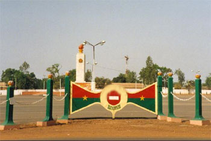

DESCRIPTION DE LA PLACE DE LA REVOLUTION
La Place de la Révolution est l'une des places publiques les plus emblématiques de Ouagadougou. Située au cœur de la capitale, elle constitue un important lieu de rassemblement populaire, de cérémonies officielles et de manifestations citoyennes. Son vaste espace est marqué par le célèbre Flambeau de la Révolution, monument symbolisant la lutte, la liberté, la justice sociale et l'engagement patriotique.
- 📐 Caractéristiques spatiales
- 🗽 Le Monument Central : Le Flambeau de la Révolution
- 🏢 Environnement immédiat (Les institutions limitrophes)
- À l'Ouest :
- Au Sud
- Aux alentours :
Un espace entièrement pavé, plat et dégagé, maximisant la capacité d'accueil du public. Elle s'étend sur 2,8 hectares (28 000 m²) et est située en plein centre-ville de Ouagadougou, la capitale.
Érigé en 1984 avec l'appui technique d'architectes nord-coréens, le monument se compose de fresques murales sculptées qui dépeignent des scènes de lutte populaire, le travail de la terre (agriculture) et l'union des classes sociales pour la défense de la patrie; Une haute colonne de style réaliste socialiste surmontée d'une structure symbolisant un flambeau. Le flambeau incarne la lumière de la liberté et l'autodétermination du peuple.
La place est ceinturée par des infrastructures hautement stratégiques :
Le Camp militaire Guillaume Ouédraogo.
Le siège national de la Banque Centrale des États de l'Afrique de l'Ouest (BCEAO).
La Caisse nationale de sécurité sociale (CNSS) et des artères routières majeures de la capitale.
HISTORIQUE DE LA PLACE DE LA REVOLUTION
L'histoire de la place est intimement liée aux grandes mutations politiques du pays. Chaque changement de régime s'est traduit par une nouvelle dénomination.
- Avant la colonisation
- L'effacement colonial
- Le premier soulèvement populaire (1966)
- L'effervescence sankariste (1983 - 1987)
- L'institutionnalisation (De 1993 à aujourd'hui)
À l'origine, cet espace abritait le premier grand marché de Ouagadougou, connu sous le nom de Rood Woko. Il s'agissait du poumon économique de la cité bien avant l'arrivée des puissances coloniales.
Sous l'administration coloniale française, le marché est déplacé pour des raisons d'urbanisme. Le site est alors rebaptisé Place d'Arboussier, en hommage à Henri d'Arboussier, un haut fonctionnaire et gouverneur colonial français.
Le 3 janvier 1966, une grève générale et une insurrection populaire historique chassent du pouvoir le premier président du pays indépendant, Maurice Yaméogo. Pour pérenniser cette première victoire du peuple, l'espace prend le nom de Place du 3 Janvier.
Le 4 août 1983, le capitaine Thomas Sankara prend le pouvoir et instaure la Révolution démocratique et populaire. En 1984, la place est modernisée, le monument actuel est construit et le site est baptisé Place de la Révolution.Elle devient le théâtre des grands meetings politiques. C'est ici que Thomas Sankara prononce ses discours anti-impérialistes les plus célèbres devant des foules immenses.
Après la fin de la révolution et dans le cadre du retour à un régime constitutionnel, le président Blaise Compaoré promulgue un décret en 1993 renommant officiellement le site Place de la Nation, un terme jugé plus consensuel.
La Place de la Révolution représente bien plus qu'un simple espace public. Elle est un symbole vivant de l'histoire politique du Burkina Faso, de la lutte pour l'émancipation du peuple et de l'attachement aux idéaux de justice et de progrès. À travers son monument et son histoire, elle continue de transmettre aux générations présentes et futures les valeurs de patriotisme, de solidarité et de responsabilité citoyenne.
- Emplacement: situé en plein centre-ville de Ouagadougou
- Horaires: Ouvrables 24h/24 et 7j/7
- Accès: Tous publics
- Géolocalisation: Voir la Place de la Révolution sur Google Maps